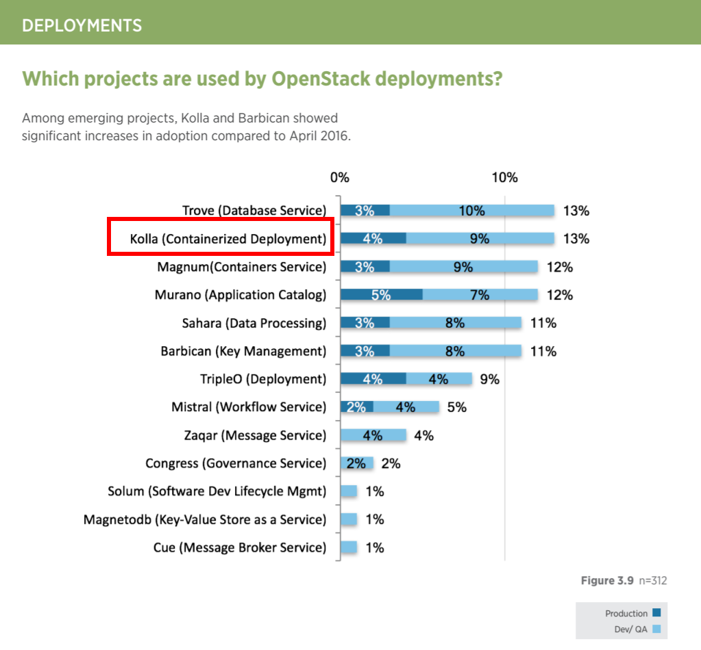
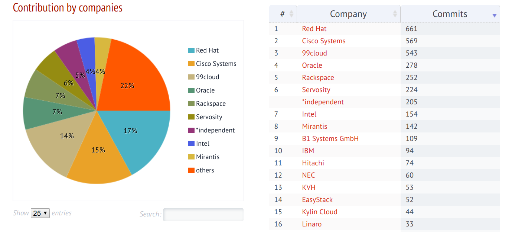

OpenStack 项目开始于 2010 年 ， 由 Rackspace 和 NASA 合作发起的 ， 旨在为公共及私有云的建设与管理提供软件的开源项目 。2012 年的发布的 OpenStack Essex 和 Folsom 算是真正意义上被广泛使用的版本 。 很多公司最早使用或改造的版本都是从这个时候开始的 。
现在我们提到容器 ， 一般就是指 Docker 公司的 Docker 产品 。 Docker 项目始于 2013 年 。 由于其简单易用 ， 性能无损耗及沙箱机制 ， 很快就流行了起来 。 当时就有一种声音 ， 容器会取代虚拟机 ， 因此 OpenStack 面对着巨大的压力 。 为了应对这种快速的技术革新 ，OpenStack 基金会后来将项目管理变成了 “Big Tent” 模式 。 从此 OpenStack 的子项目数量发了质的飞跃 ， 也促进了大量优秀 OpenStack 子项目的诞生 。
现在看来 ， 虚拟机技术和容器技术各有自己的使用场景 。 两者不是相杀 ， 而是相爱关系 。 近几年 OpenStack 社区涌现了大量与容器相关的项目 ：
- nova-docker，Nova 的 docker 驱动
- Magnum， 在 OpenStack 上面管理容器编排引擎 ， 包括 Docker Swarm，Kubernetes，Apache Mesos 等
- Kolla， 利用容器来简化 OpenStack 部署
- Zun， 在 OpenStack 上统一管理容器
- Kuryr，Docker 的网络插件 ， 可以让 Docker 使用 Neutron 的网络
OpenStack 容器化的必要性
在容器化部署 OpenStack 项目开始之前 ， 已经有大量 OpenStack 部署方案存在 ， 包括当时整个社区主流的老牌部署工具 Puppet， 新兴的工具例如 SaltStack, Ansible, Chef 都有相关的部署模块 。 然而这些部署方案并没有简化 OpenStack 的部署 ， 只是实现了过程的自动化 。 本质上是没有太大区别的 。 有些问题并没有很好的解决 ， 例如包的依赖关系 ， 升级困难等 。
吃自己的狗食 ， 这在软件开发过程中很重要的一个原则 。 都说这东西好 ， 自己都不用 ， 怎么推给用户 ? 大家都知道容器好 ， 各个厂商也都在积极的推广 ， 但是你自己的产品容器化了么 ? 如果没有 ， 怎么能说服客户呢 ? Kolla 的诞生就是吃自己狗食的结果 ， 真正的利用容器来简化提升 OpenStack 的部署 。
与此同时 ， 容器化还带来许多好处 。
- 简化安装流程 ， 提升部署效率 。 容器化后 ， 把整个安装过程简化成了生成配置文件 、 启动容器这么简单的两个步骤 。 宿主机上只依赖 Docker Engine 和 Docker-py ， 不用安装其它任何二进制包 。 同时也提升了安装的效率 。 现在安装 100 个节点半小时左右就可以部署成功 。 如果使用传统的安装方式的话 ， 最少要花一天的时间 。
- 环境隔离 。 容器化后 ， 每个服务都是运行在单独的容器里面 ， 运行环境是相互隔离的 ， 这也就避免了包依赖导致的问题 。 同时 ， 也使得单服务升级成为可能 。 例如使用 Ocata 版本的 Horizon 对接 Newton 版本的 Nova。
- 升级和回滚 。 由于 OpenStack 模块众多 ， 传统的部署方案很难来做 OpenStack 的升级 ， 而且一旦升级失败 ， 也无法做回滚操作 。 但是容器化后就不同了 ， 升级就是用新的容器替换旧的容器 。 回滚就是用旧容器替换新的容器 。 一切都变的简单自然 。
- OpenStack 很多很有潜力的项目 ， 以前因为发行版没有打包 ， 导致用户测试 、 验证都很困难 ， 用户投入生产使用 ， 也面临重重的困难 。 这其实也是导致目前为止 ， 用户还是停留在几个核心项目使用的主要障碍 。kolla 支持以源代码的方式进行镜像构建 ， 可以把大量对用户有价值的项目放到 Kolla 里 ， 加快项目成熟的速度和开发周期 。
- 加快创新的速度 ，OpenStack 的完善单靠自身还是不够的 ， 需要依赖外面很多项目 。 例如 skydive, 现在很多项目都是用容器进行发布 ， 集成 kolla 的代价和周期就非常短 。 集成到 kolla， 不需要考虑 OpenStack 版本 、 环境依赖甚至操作系统版本 。
OpenStack 容器化技术难点
由于 Docker 一直在成长 ， 因此必然面临不成熟的问题 。 在这也给整个容器化过程带来了许多困难 。
镜像构建
由于 OpenStack 部署涉及到的模块相当多 ， 这其中既包括基础服务 ， 如 RabbitMQ，MySQL 等 ， 也包括 OpenStack 本身的众多服务 ， 如 Keyston，Nova 等 。 同时 Dockerfile 本身的描述能力又很有限 。 这些服务如何快速构建 ， 是首要解决的问题 。
利用 Jinja2 模板 ， 动态生成 Dockerfile 的文件 ， 有效的简化了 Dockerfile 的内容并增强了 Dockerfile 的描述能力 。 利用 Dockerfile 的镜像依赖功能 ， 将公共数据安装到基础镜像中 ， 私有数据安装在最终的镜像中 ， 有效的提升了构建的速度 ， 降低了所有镜像的总大小 。 现在一共有 200 多个镜像 ， 总大小不超过 4GB。
同时支持 binary 和 source 两种构建方案 ， 而且支持 CentOS, Ubuntu, OracleLinux 做为基础镜像 ， 可以满足用户不同的需求 。
同时也支持在不修改代码的情况下 ， 对镜像进行定制 。
PID 1 进程
容器里面的第一个进程的进程号是 1, 由于 Linux 内核中会对 pid 1 有特殊的意义 ， 所以很多情况下会造成容器不能正常停止或大量僵尸进程的存在 。 一般情况下 ， 当给一个进程发送信号时 ， 内核会先检查是否有用户定义的处理函数 ， 如果没有 ， 就会回退到默认行为 。 例如使用 SIGTERM 直接杀死进程 。 然而 ， 如果进程的 PID 是 1, 内核会特殊对待它 ： 如果没有注册用户处理函数 ， 内核不会回退到默认行为 ， 也就什么也不做 。 多数的应用程序都不会注册 SIGTERM 的处理函数 ， 当他接收 SIGTERM 信号时 ， 什么也不会发生 。 最后只能通过 SIGKILL 杀死进程 。 同时 ， PID 1 进程还应该要负责容器内所有孤儿进程的资源回收 。 否则就会出现僵尸进程 。
解决方案在 Docker 1.13 之前 ， 可能通过手动加入一个的 init 管理程序 ( 例如 tini )。 如下
# Add Tini
ENV TINI_VERSION v0.15.0
ADD https://github.com/krallin/tini/releases/download/${TINI_VERSION}/tini /tini
RUN chmod +x /tini
ENTRYPOINT ["/tini", "--"]
Docker 1.13 之后 ， 已经内置了一个 init 管理程序 ， 使用如下 ：
docker run --init -d centos <command>
容器初始化
某些容器在启动之前 ， 是要进行一定的初始化操作的 ， 比方说 MySQL 服务 ，MySQL 的数据文件 /var/lib/mysql 目录肯定要放到一个单独的 docker volume 上面的 。 然而 docker volume 里面本身是空的 ， 需要通过 mysql_install 命令初始化基础表 ， 同时配置好 root 密码 。 这类操作只是在第一次启动 MySQL 之前是需要的 ， 之后就没有必要了 。 所以解决方案是在真正启动 MySQL 之前 ， 创建一个 bootstrap_mysql 的容器来进行初始化 ， 初始化完成后就删除掉 。 之后在启动真正的 MySQL 容器 。 多数的有状态的服务都有类似需求 ， 都可以通过这种方案来解决 。
配置文件
Docker 一直没有把配置文件的管理处理好 。 它推崇通过环境变量来处理 ， 然而并不是所有的应用都可以适应这种要求 。 尤其是像 RabbitMQ 这种已经成熟的应用 ， 和 OpenStack 这种有好上千个配置项的项目 。 如果配置文件固定死 ， 镜像本身就很难做到通用 。
Kolla 的解决方案是 ： 当容器启动的时候 ， 需要通过 volume 的方式把配置文件加载到容器中的特殊位置 ，Kolla 在所有的镜像里内置一个脚本 ， 通过读取加载进来的 config.json 文件 ， 把配置文件拷贝到真正的目标位置 。
这么做的好处是 ， 配置文件可以依据真正的部署环境 ， 动态的增加或减少 。 比方说开启 ceph 的时候 ， 就需要把 ceph.conf 的配置文件放到 /etc/ceph/ceph.conf 位置 。
Namespace
Kolla 的一个实现原则就是单容器单进程 。 然而在 Docker 1.10 版本之前 ， 并不支持修改挂载点的挂载模式 。 所以之前的实现是单容器里面 ， 通过 supervisord 把 neutron 的几个 agent 启动到同一个容器里面 。 这样几个 agents 创建的 namespace 才可以相互访问 。 从 Docker 1.10 版本起 ， 支持了全部的挂载模式 。 通过利用 shared 的挂载方式 ， 使得创建的 namespace 可以共享 ， 从而可以把全部的 agent 运行到各自的容器里面 。 这一升级彻底实现了单容器单进程的目标 ， 大大简化了部署结构 。
容器化 OpenStack 现状
现在有好几个厂商都在做容器化解决方案 ， 其中包括 openstack-ansible，stackanetes，fuel-ccp， Kolla 等 。 但是只有 Kolla 最活跃 ， 使用的最多 ， 而且已经有了大量生产环境的案例 。
下图是 2017 年 OpenStack 用户调查的结果 ， 可以看出 Kolla 的关注度已经跃居首位 ， 有了很大的提升 ， 有超过 10% 用户在测试环境使用 Kolla, 其中 4% 的用户已经用于生产环境 。
九州云已经有多个容器化 OpenStack 的生产环境 ， 其中最早一个是某台湾客户于 2016 年 6 月份搭建完成并投入生产 ， 共有 53 个物理节点 ， 采用计算和存储融合的方式 ， 到现在一直运行良好 。
Kolla 项目现在已经拆分成了三个子项目 ， 包括解决镜像构建的 kolla, 利用 Ansible 编排部署的 kolla-ansible 项目 ， 以及把 OpenStack 部署在 kubernetes 上面的 kolla-kubernetes 项目 。 后两者都是统一使用前者构建的镜像 。
现在 kolla-ansible 已经支持了所有 OpenStack big tent 项目 ， 及大部分主流项目 ， 可以满足不同用户的使用需求 。 同时 kolla-kubernetes 项目也很快会发布 1.0 的版本 。
Kolla 的成功
从立项开始 ，Kolla 项目的活跃度就一直保持在前几名 ， 参与公司也是非常多的 。 包括 Redhat，Mirantis，Cisco，Intel，IBM 这些老牌大公司都在里面有大量贡献 。 反观有些项目 ， 活跃度低不说 ， 参与的公司也少 ， 没有新鲜的血液 ， 很难走的长久 。 值的一提的是 ， 中国有多家公司在 Kolla 项目中均有大量的贡献 。
Kolla 项目成功的另一个关键是技术的革新和正确的选择 ， 包括 ：
- 立项的时间 ：Kolla 项目开始于 2013 年 9 月 ， 是所有容器化部署 OpenStack 项目中最早启动的 。
- 部署工具采用了 Ansible 无疑是相当正确的选择 。 一是功能强大而且简单易用 ， 不像 puppet 那么复杂 ， 很快就可以上手 。 二是后来 Ansible 被 Redhat 收购后 ， 发展相当迅猛 ， 在 OpenStack 社区的使用率已经超过了 puppet。
- Docker 1.10 版本的发布 。 这个版本发布于 2016 年 2 月份 ， 修复了大量问题 ， 并增加了上面提到的挂载点模式的支持 。 当时 Kolla 也正在做大规模重构工作 ， 正好利用版本发布的最后两个月时间把整体架构定了下来 。 从此 Kolla 的部署架构没有太大规模的调整 ， 而且有些生产环境就是使用的 2016 年 4 月份发布的 Mitaka 版本 。 如果当时 Docker 的版本没有解决这些问题或晚一个月发布 ，Kolla 的成熟肯定要晚半年时间 。
- 适时的放弃 kolla-mesos 转向 kolla-kubernetes 项目 。 2016 年初 kubernetes 1.2 版本发布让社区看到了 kubernetes 将来的发展 ， 并立即中止了才开始半年时间的 kolla-mesos 项目 ， 开始了 kolla-kubernets 项目 。 现在看来 ， 这也是相当正确的选择 。
所以 Kolla 的成功占据了天时 、 地利及人和 。 成功也是偶然中的必然 。
未来
Kolla 基本进入了一个成熟稳定的时期 ， 在 Pike 这个周期内 ， 虽然没有太大的架构变动 ， 不过依然会增加很多新功能 ， 比如支持 Debian 系统 ， 支持 DPDK， 支持 ARM 和 Power 服务器 ， 支持 VMware 和 HyperV 虚拟化以及更加全面的集成测试等 。 同时 kolla-kubernetes 也同样值得期待 。
容器化 OpenStack 大大的简化了整个部署流程 ， 真正实现了一键部署 ， 给用户带来了极大的方便 。 可以预见 ， 随着 OpenStack 安装的简化 ， 将会吸引更过的用户部署和使用 OpenStack， 而随着一键升级 、 一键维护等功能的逐步完善 ， 相信用户对 OpenStack 的使用将会更加普遍 ， 更加得心应手 。
Comments